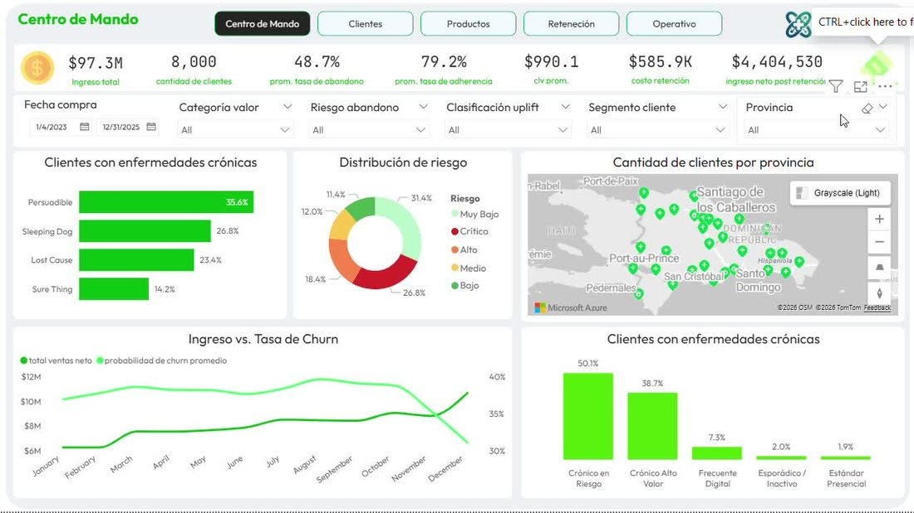

PLATAFORMA · 4 MÓDULOS · POWER BI
XPharmaCare — Inteligencia de Cliente en Salud
Plataforma integral que convierte 8,000 clientes y RD$97.3M en ingresos en decisiones concretas de retención. Es el proyecto donde se unen las cuatro áreas: predice el abandono, mide su valor económico, entiende al paciente crónico y dirige la inversión solo a quien la oferta hace cambiar de opinión.
RD$97.3M
Ingreso analizado
x3.31
ROI de retención
RD$2.7M
Ahorro vs. "todos"
79.2%
Adherencia global